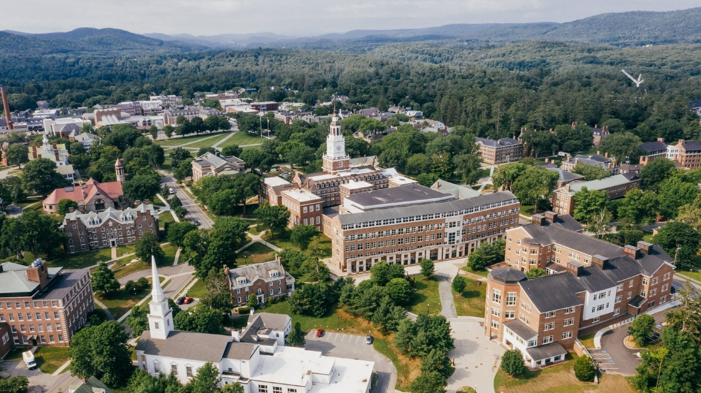
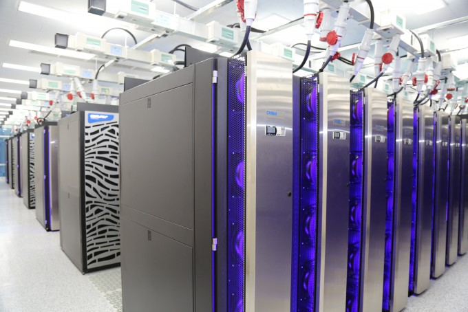
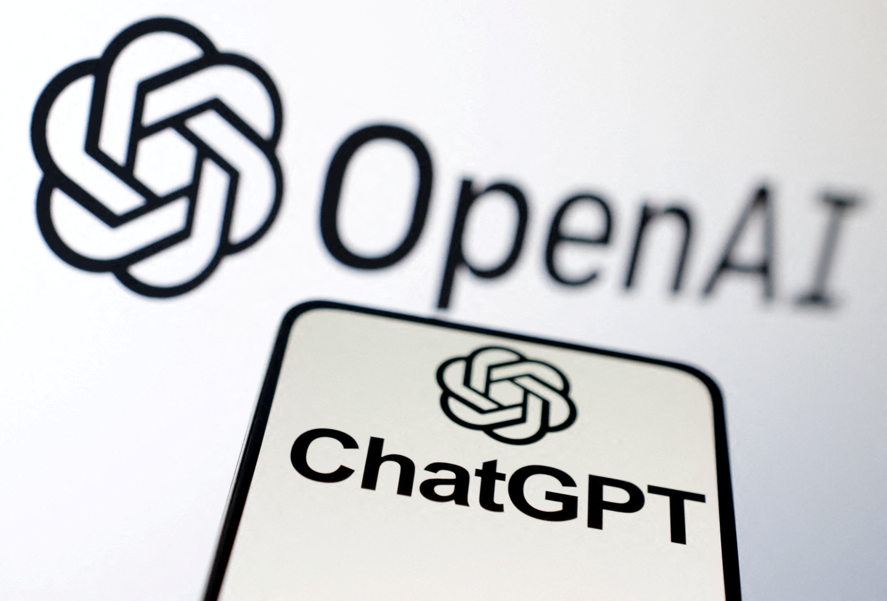

인공지능은 어떻게 발전하였는가, AI의 역사
AI의 탄생(1952년~1956년)

1940년대 후반과 1950년대 초반에 이르러서 수학, 철학, 공학 등 다양한 영역의 과학자들에게 인공적인 두뇌의 가능성이 논의 되었으며 1956년에 이르러서 인공지능이 학문 분야로 들어섰습니다. 1950년 인공지능의 아버지로 불리는 튜링은 '계산 기계와 지능(Computing Machinery and Intelligence)'라는 논문에서 기계가 생각할 수 있는지 테스트하는 방법, 지능적 기계의 계발 가능성, 학습하는 기계 등에 대해 적었는데, 1956년 여름 다트머스 컬리지에서 10명의 과학자가 모인 학회가 인공지능학의 시초로 여겨지고 있습니다.
AI 연구의 황금기 (1956년~1974년)

다트먼스 컨퍼런스 이후, AI라는 새로운 영역은 빠른 속도로 발전하기 시작했으며 많은 성공적인 프로그램들이 50년대 후반과 60년대에 나타났습니다. 대표적인 탐색 추리 방식의 예는 컴퓨터를 이용하여 사람 언어의 이해, 생성 및 분석을 다루는 AI 기술인 '자연어 처리'입니다. 1970년 마빈 민스키는 '3~8년 안에 우리는 평균정도의 인간 지능을 가지는 기계를 가지게 될 것이다.'라며 낙관록을 예측하기도 하였습니다.
인간처럼 생각하는 기계, 첫번째 암흑기(1974년~1980년)

튜링은'계산 기계와 지능'이라는 논문에서 기계가
생각할 수 있는지 시험하는 방법, 지능적 기계의 개발 가능성,
학습하는 기계 등에 대해 기술하였습니다. 이 기술을 현실화한 튜링 머신은
존 폰 노이만 교수에게 직/간접적인 영향을 주어 현대 컴퓨터 구조의 표준이
되었고,세간에서는 이것을 인공지능 역사의 시작으로 보고 있습니다.
하지만 1969년 마빈 민스키와 세이무어 페퍼트는 저서를 통해 퍼셉트론은 AND
또는 OR 같은 선형 분리가 가능한 문제는 가능하지만, XOR 문제에는 적용할
수
없다는 것을 수학적 증명으로 발표하였습니다. 또한 영국의 라이트힐 경의
영국의회에 "폭발적인 조합증가를 인공지능이 다룰 수 없다."는 보고를
함으로써, 사실
상 인공지능에 대한 대규모 연구는 중단되어 암흑기에 접어들게 됩니다.
인공지능의 두번째 암흑기(1987년~1993년)

1970년대 미국의 500대 기업 절반이상이 전문가 시스템을 사용했고 지속적인 투자를 한동안 받았습니다. 하지만 방대한 관리방안과 투자대비 효용성의 한계가 노출되어 인공지능의 연구는 약해지고, 1993년 미국부터 대부분 연구방향은 슈퍼 컴퓨터와 시뮬레이션 분야로 연구방향을 전환하게 됩니다.

인공지능의 새로운 시대
Deep-CNN(이미지인식/분류 특화모델)은 이미지 인식 성능 평가에서 2011년에는 26%인식 오류율을 보였으나, 2015년 4년만에 3.5%로 개선하는 괄목할 성과를 보였습니다.
일례로 이렇게 딥러닝의 가능성이 증명되자 2014년 구글은 딥마인드 테크놀로지 사를 4억달러에 인수했습니다. 그 이후 '16년 알파고1.0이 이세돌을 이기고,'17년2.0으로 커제 및 탑클라스 바둑기사들에게 승리하면서, 인공지능 기술이 전문가 뿐만 아니라 일반인들에게도 확실히 인식되고, 완전히 재조명되는 계기가 되었습니다.

그 이후 AI는 가파른 성장과 새로운 시대를 열었습니다. 현재에는 머신러닝과 딥러닝 같은 인공지능 알고리즘을 학습시키는데 필수적인 자원인 데이터가 충분하고, 하드웨어 기술의 발전으로 컴퓨팅 성능이 향상되었으며, 병렬 처리가 가능한 GPU, 클라우드 컴퓨팅 등의 기술발전으로 더 복잡한 알고리즘을 실행할 수 있게 되었습니다. 또한 뇌의 신경 구조를 모방한 신경망 알고리즘을 사용하여 데이터로부터 특징을 추출하고 패턴을 학습할 수 있습니다. 많은 기업과 연구소에서 개발한 알고리즘과 플랫폼을 개방하고 있습니다. 또한 의료, 교육, 산업 등 다양한 분야에서의 비즈니스 및 사회적 요구가 일어나고 있으며, 지금까지는 인공지능 기술적용이 긍정적 인식을 불러일으켜 왔기에, 이러한 움직임은 더욱 속도가 빨라지고 있습니다.
세 번째 암흑기를 맞이 할 가능성은?
화형인공지능 서비스인 챗GPT(ChatGPT)를 이끌고 있는 오픈 AI(Open AI)는 2015년 12월 시작한 스타트업으로, 현재 그 기업 가치는 270억 달러(약 35조원) 이상으로 평가받고 있습니다.
지난달인 2023년 11월, 오픈 AI 이사회에서 일어난 해프닝은 세계가 마주한 인공지능의 문제점과 한계를 여실히 드러냈습니다. 오픈 AI 이사회는 CEO인 샘 알트만(Sam Altman)을 해임시켰다가, 단 5일만에 이 결정을 번복하게 됩니다.
샘 알트만은 수익 공유형 비즈니스를 구상하여 비전을 발표하였는데, 이사회는 그의 이러한 상업적 접근이 인류를 위협할 수 있다고 판단하였습니다. 그러나 CEO의 해임으로 기업 주가가 떨어지자, 두 손 들고 만 것입니다.
앞으로 핵심적인 정보에 접근하거나, 고차원의 데이터를 이용한 인공지능 결과물을 얻으려면, 비용을 지불해야 할 것입니다. 정보의 편중, 정보의 빈부격차, 정보 소유의 계급화 등의 문제가 발생할 수 있는 것입니다. 인공지능의 발전은 윤리적, 사회적, 안전적인 문제들을 여전히 동반합니다. 그리고 기술적으로도 구체적이고 실질적인 부분이 더욱 개선되어야 하겠습니다.
인공지능의 세 번째 암흑기를 맞이할 가능성은 여전히 남아 있습니다. 그러나 인류는 지금까지 그래왔던 것처럼, 슬기롭게 문제를 해결하며 기술발전을 이루어 나갈 것입니다.
인공지능은 현재와 미래에 걸쳐 많은 분야에서 중요성을 가지게 되었습니다. 앞으로 인공지능 기술은 더욱 발전할 것으로 예상됩니다. 단순히 기계를 이용하는 삶에서 인공지능에 기반한 삶으로 패러다임 전환이 이루어지고 있습니다.
인공지능을 이해하고 기본적인 개념을 습득하는 것이 중요해졌습니다. 인공지능에 대한 기초지식을 쌓으면서, 다양한 분야에서 이 기술을 적절하게 활용할 수 있어야 할 것입니다.
인간과 인공지능의 관계와 미래에 대해 마지막으로 첨언하자면, 궁극적으로는 인간을 본 뜬 인공지능과 상호적 발전을 하여 오히려 인간의 창의성이 극대화될 것이라 예상합니다.